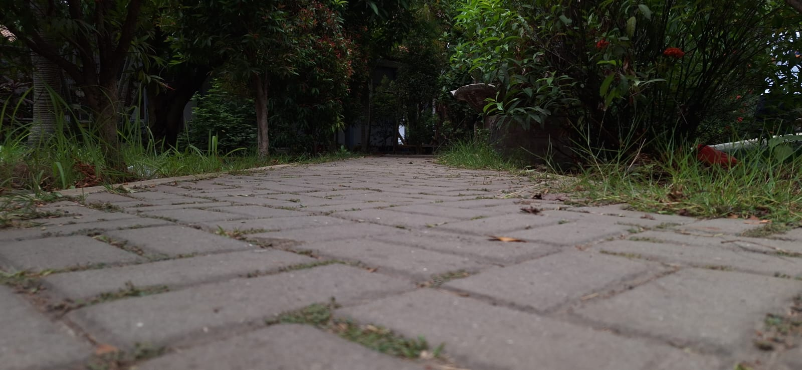
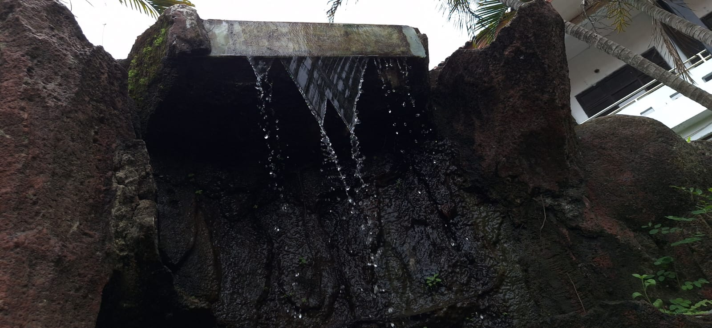
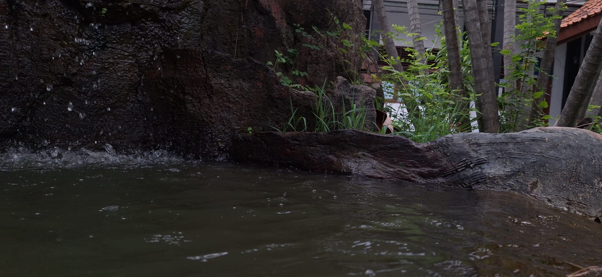
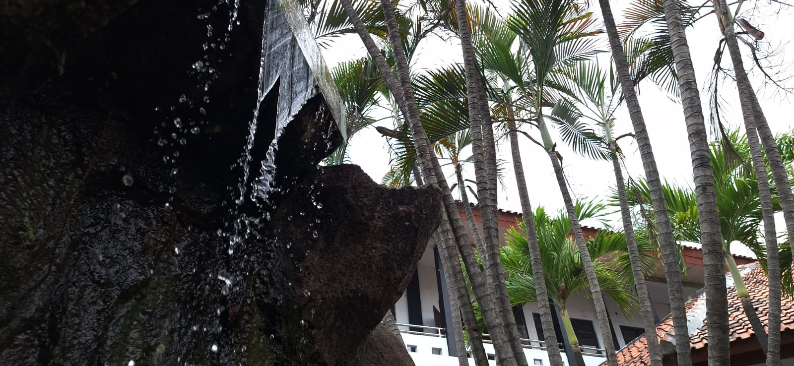
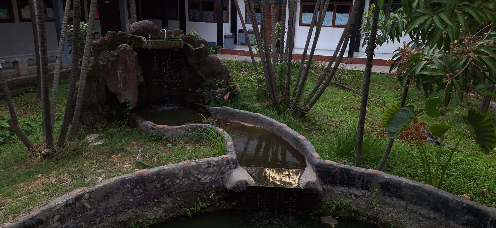
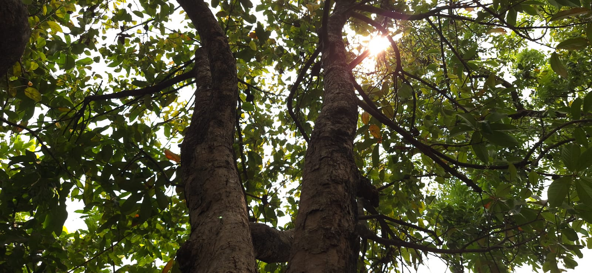
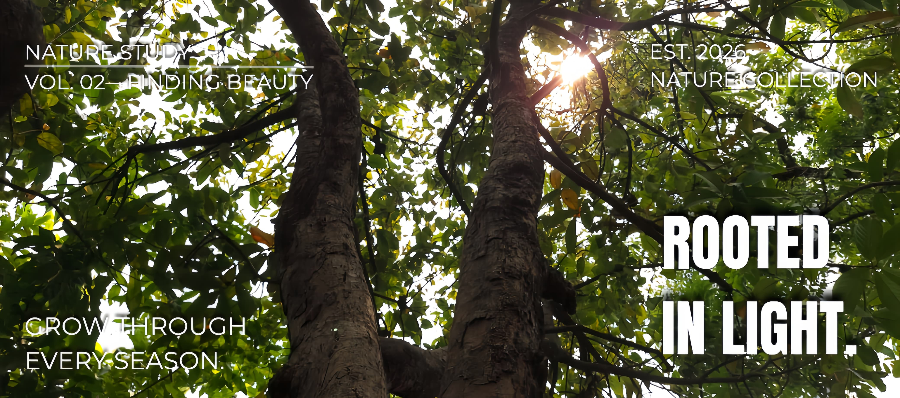

JALUR SETAPAK
Jalur yang Sunyi
Jalan setapak berbahan paving block di tengah rimbun tanaman hijau yang mengajak kita melangkah lebih pelan.

Kumpulan visual
Satu halaman khusus untuk menampilkan banyak foto, masing-masing dengan judul dan keterangan.

JALUR SETAPAK
Jalan setapak berbahan paving block di tengah rimbun tanaman hijau yang mengajak kita melangkah lebih pelan.

AIR TERJUN
Aliran air jernih yang jatuh dari celah bebatuan berlumut, menghadirkan suara gemericik yang menenangkan.

KOLAM
Tetesan air yang jatuh ke permukaan kolam batu, membentuk riak-riak kecil yang menyegarkan sudut sekolah.

NUANSA
Butiran air yang jatuh dari tebing batu berpadu dengan siluet deretan pohon palem yang menjulang di halaman.

Taman
Aliran kolam berliku di tengah taman hijau depan ruang kelas, menjadi penyegar mata di sela aktivitas belajar.

TEDUH
Sinar matahari yang menyelinap di antara celah batang dan dedaunan rindang, menghadirkan kehangatan alami.

Foto pilihan
Tempat Aesthetic untuk menenangkan pikiran dan menginspirasi kreativitas.
Kembali ke landing page